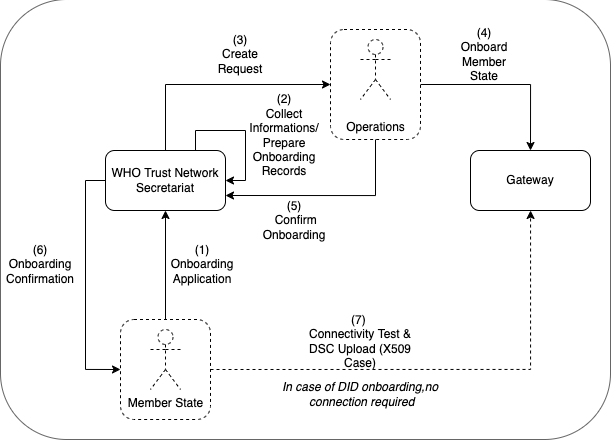
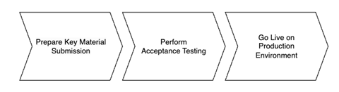

Onboarding Process
The following describes the on-boarding processes for the Global Digital Health Certification Network (GDHCN).
The GDHCN Secretariat manages the Onboarding Process and Letters of Applications of eligible GDHCN Participants to connect as a trusted party to the trust network. Prepared onboarding records will be handed over to the GDHCN Secretariat with the request to process the technical on-boarding of the trusted party. An organizational and technical successful application results in a confirmation and the GDHCN Participant can connect to the trust network as a trusted party.

Please review the:
- Concepts underpinning the description of these on-boarding processes including the general description of the Terms of Participation;
- Onboarding Overview describing the overview of the onboarding process;
- Certificate Governance describing the governance of public key certificates;
An eligible GDHCN Participant should complete the Onboarding Checklist which contains guiding videos through the onboarding process.
After positively assessing the Letter of Application and assessing the Technical Evaluation Form, WHO will:
- provide the necessary technical specifications and configuration information to connect to their back-end systems to the WHO GDHCN Trust Network Gateway (TNG)
- invite the GDHCN Participant to register their production certificates and promote them to the production environment.
The GDHCN Administrative and Operational Framework should be considered the authoritative source of definitions and concepts in case of any discrepncies.
Overview of the Onboarding Process
The full GDHCN onboarding process is divided it into three main stages as per the following figure:

Figure 1: Onboarding Stages
Prepare Key Material Submission
To establish a connection with the Trust Network Gateway (TNG) and become a participant of the GDHCN, the participant is required to prepare their own key materials for us to onboard onto the gateway. This process necessitates technical expertise for the preparation of X.509 certificates, which are to be stored in a GitHub repository owned by the participant for submission.
In order to start the onboarding participants need to Prepare Key Material Submission.
Please follow the steps described in the: tng-participant-template and README.md.
For more information, you can check the following resources:
A Diagram that gives and overview about the steps in order to start the Full Onboarding.

The document contain a detailed description of the tasks to be carried out by the participant. Note: Please note that the participant’s work begins at step 8 and ends at step 14.
Once we have received your submission and successfully onboarded the material, we will contact you to start the next phase of testing.
Perform Acceptance Testing
After we contacted the participant about successful onboarding, a connectivity test should be the first action of the process. When connectivity is successfully established the participant should execute their acceptance tests. These acceptance tests must be performed on dedicated test environment called User Acceptance Testing (UAT) which already connects other trust network participants, that applied for onboarding.
The Trust Network Gateway API can be used for interaction keeping the full functionality of the EU DCC Gateway. In addition, various HL7 FHIR services are being added.
The participant needs to [communicate the results] of their tests to us, a quality check about the communicated results will be carried out, so that we can check for any issues or approve their readiness for production rollout.
Go Live on Production Environment
Once the acceptance stage has been successfully completed and approved, the process to Go Live on Production Environment can commence. This involves submitting the key material targeted for the production environment (as outlined in stage 1), followed by onboarding to the production environment. The participant will be notified once the Go Live on Production Environment has been successful.
Onboarding Application Requirements
Eligible GDHCN Participants are invited to submit a signed with:
- the necessary information to connect to the production environment
- attestation to comply with the Terms of Participation.
The application of the GDHCN Participant must contain at least:
- One or more TNPSCAs, one TNPTLS and one TNPUP ;
- A statement about the acceptance of keys and processes of other jurisdictions which are present in the gateway lists; and
- Contact Persons - Technical, Legal, Business Owner.
Letters of Application
Letters of Application - DDCC
DDCC: The Trust Domain for the Digital Documentation of COVID-19 Certificates
- Letter of Application for DDCC using the Transitive Trust
- Letter of Application for DDCC by the Full Onboarding Process
- Letter of Application for DDCC by the Full Onboarding Process - Arabic Version
- Letter of Application for DDCC by the Full Onboarding Process - Chinese Version
- Letter of Application for DDCC by the Full Onboarding Process - French Version
- Letter of Application for DDCC by the Full Onboarding Process - Russian Version
- Letter of Application for DDCC by the Full Onboarding Process - Spanish Version
Letters of Application - PH4H
Letters of Application - IPS Pilgrimage
Letter of Application - Trust Network Gateway
- Letter of Application for Trust Network Gateway - English Version
- Letter of Application for Trust Network Gateway - Arabic Version
- Letter of Application for Trust Network Gateway - French Version
- Letter of Application for Trust Network Gateway - Mandarin Version
- Letter of Application for Trust Network Gateway - Russian Version
- Letter of Application for Trust Network Gateway - Spanish Version
Secretariat Tasks
The secretariat must handle the following tasks to establish the on-boarding process:
- The organizational identity and contact will be established in an offline process by WHO through it’s Member State country offices with appropriate contacts at ministries of health or appropriate public health agency.
- providing a Secure Channel for the GDHCN Participant to deliver secure and trustworthy applications SCA and/or DID information;
- creation and Securing a Key Pair (Trust Anchor) to sign/confirm on-boarding requests for the gateway;
- delivering the Public Key of the Trust Anchor to the Gateway Operations; and
- transmitting On-boarding Requests to the Gateway Operations.
Details of the Onboarding Process
This document describes the standard onboarding process (so called Future Onboarding Process - FOP).
Note: In the embedded image the following relabels apply:
DCCG -> TNG
CSCA -> SCA
DCC -> VDHC (Verifiable Digital Health Certificate)
NB -> TNP
It is highly recommended:
To use certificates issued from a public CA which follows the CAB Forum Rules
Not to reuse any certificates across the different staging environments
In the following description the required steps are divided into three sections:
[1] - [29] - Application and Verification
[30] - [59] Setup
[60] - [End] Participant Onboarding

Application and Verification
[1] The eligible Trust Network Participant (TNP) has to submit its Statement of Interest [link to the form. [Document 5] ] to gdhcn-support@who.int .
[2 – 3] WHO validates all provided data and verify that such a data follows WHO compliance with Trusted Network Terms of Participation (TOP 0 – 3) https://smart.who.int/trust/concepts.html as well as: Participant´s eligibility criteria, governmental entity/health agency, contact details of approvers and individuals. [See Elegibility Criteria]. [Document 16]
< see chapter 9.5 in TOP details > [Document 6]
[4 - 5] In case no compliance with WHO governance rules is given, the application is rejected. The rejection is communicated to the TNP by email.
[6] TNP needs to modify the data they shared with WHO and re-apply it.
[7] If the WHO’s technical team gives a positive opinion, the eligible Trust Network Participant will be invited to start the onboarding process. The following information is included:
- The necessary technical specifications and configuration information to connect the local backend systems to the WHO TNG
- The request to provide the necessary information to be onboarded to the different environments (UAT, PROD, DEV (optional))
- The request to comply with the Trust Network Terms of Participation
[8] The TNP receives the confirmation and necessary technical information to connect to the TNG and register the certificates.
For a successful connection to the Trust Network Gateway there are the following steps [9] – [11] to prepare:
[9] Create certificates per environment. Details can be found here: https://smart.who.int/trust/concepts_CertificatePreperation.html
1) Certificates must be prepared for all environments (self-signed allowed) following the requirements in Certificate Governance - Authentication: TNPTLS - Upload: TNPUP - SCA(s): TNPSCA
Note The participant must provide the CA certificate as well as the TLS certificate.
If the participant uses a self-signed TLS certificate, the TLS certificate can simply be copied and renamed to CA.crt.
In all other cases, the participant provides the appropriate CA certificate.
2) Prepare public keys in PEM format in your private GitHub repository (see [11]) dedicated to the used environment keys.
3) The prepared public keys must be tagged by the generated GPG keys:
- Tag the version of your latest information by using git tag + signing commands either from terminal or developer IDE. Please note that an update in GitHub web desktop itself is not working, because the platform will use an intermediate key.
- The bot user clones the latest tag of your private repo and verifies the signature of the tag against the onboarded GPG keys
- After verification of the provisioned material, the content will be taken over for the participant
[10] Create the GPG keys per environment and per each user needed.
Follow the instructions to create a key: https://docs.github.com/en/authentication/managing-commit-signature-verification/generating-a-new-gpg-key
Use Algorithm RSA or EC with minimum key length of 4096 bit (RSA) or 256 bit (EC).
[11] The TNP creates the private GitHub repositories per environment
- Create a private git repository on GitHub.
- Prepare the following information to be provided in the onboarding request:
- Environment repository URL’s (all private to hide uploader’s identity) (DEV (optional), UAT, PROD)
- Invite the WHO bot user to the private repository (with read rights). The bot user is: tng-bot for PROD and tng-bot-dev for DEV (optional) and UAT environments.
[12] Upon GitHub repository creation and invitation to GitHub bot user to WHO is sent, validity for accepting this invitation is 7 days by default. If no action is taken it loses validity.
[13] Invitation for GitHub bot user must be accepted by WHO within 7 days since invitation was emitted.
[14] TNP is ready for onboarding according to WHO requirements and governance and has collected the following information in the Letter of Application [Document 16]:
the URL of the private GitHub repositories for each environment (UAT, PROD, DEV (optional))
the GPG keys per used environment and authorized/responsible person
3-digit ISO Participant code
The contact details (including email address) of the people authorized to provide the certificates of the TNPThe TNP exchanges the Letter of Application to WHO.
[15] The Letter of Application is received and processed by WHO. The TNP .
[16 - 17] The verification and confirmation of the named people that are allowed to provide the key material for the TNP takes place through either of different channels:
- Through a Face to Face meeting
Through Diplomat Channel signed confirmation
.
When the Letter of Application is received, identification of individuals take place with passport, finger printing or similar.
[18] WHO acknowledges the Letter of Application and proceeds to validate the provided data. At this stage verification of rules compliance takes place. Verification is in detailed according to process and individuals involved in the request.
[19] In case the compliance rules verification failed, WHO need to inform the TNP by email.
[20] The TNP receive an email with information indicating that validations failed. Corrective activities have to be taken.
[21] WHO is checking for each provided GPG key, if the given email address is included in the GPG key.
[22] Validate that GPG key matches cryptographic/governance criteria
Key length (min. 3072 bit for RSA and min. 256 bit for ECDSA)
mail address in GPG key must match with the provided mail address in the Letter of Application
[23] WHO is collecting the required information to be provided to the operations team (OPS):
GPG keys of all confirmed people and for all requested environments (UAT, PROD and optional DEV)
the URL’s of the applicant private GitHub repositories
3-digit ISO participant code of the TNP
the confirmation that the invitation for the GitHub bot users has been accepted
Setup
[30] The collected onboarding information is sent to the operations (OPS) team. The onboarding (OB) team is informed as well.
[31 - 35] The onboarding data is taken over to the configuration files by the OPS team to automate the GitHub processes. As a result, a Pull Request (PR) is created. Dependent on the environment, the subsequent steps differ.
[38] For UAT (and optional DEV), an auto signing process signs the keys.
[36 -37] For PROD environment, the PR is verified by WHO. After successful verification, the air-gapped signing process is performed to sign the keys. Follow to [47]
[39] The service provider checks the PR as well.
[40 - 41] In case the verification failed, WHO is informed about the outcome.
[42] Correction.
[43] In case the verification was successful the whitelisting of the certificates is initiated.
[44 - 46] and the participant will be informed that the preparation has been completed successfully.
[47] TSI Verification of Pull Request in PROD Environment.
[48 - 50] In case Pull Request failed, TSIS to communicate to Participant for them to Correct
Participant Onboarding
[60] The participant is connecting to UAT environment and the following steps has to be performed to check the connection:
1) check the connectivity with the following command:
input: curl -v https://tng-uat.who.int/trustList --cert TLS.pem --key TLS_key.pem You should see an output like: \`\`\` [ { "kid": "+jrpHSqdqZY=", "timestamp": "2023-05-25T07:55:21Z", "country": "XC", "certificateType": "UPLOAD", "thumbprint": "fa3ae91d...", "signature": "MIAGCSqGSIb3D...", "rawData": "MIIErTCCA5WgAwIBAgII..." } ] \`\`\`2) Test the other Trustlist Routes in the same style (e. g. with DSC/SCA/Upload/Authentication…)
[61] In case the connection fails, some corrective actions must be performed to analyze and solve the issue(s). The operations team is supporting the TNP.
[62] After the connection to the TNG is established the participant can start the dry run test on UAT.
This test includes the listed steps:
a) Upload one or more DSCs to the TNG
b) Delete at least one DSC again (revocation of a DSC)
c) Optional: Upload it again (if it is required for further testing)
d) Download the trust list from the TNG gateway (API)
e) Provide sample VDHC s to be verified by the service provider
f) Validate some sample VDHC ‘s to ensure the validation implementation is working fine
[63] After executing all required steps, the participant must provide the test results to the onboarding team.
[64 - 65] The onboarding team checks the results and provides feedback to the participant.
[66] In case of any issues additional corrective actions are bespoken and solved with the participant.
[67] If the Dry Run Test has passed successfully, the whitelisting of the certificates in the gateway (PROD environment) continues.
[68 - 69] The Onboarding team informs the TNP to be ready to connect to TNG PROD environment.
[70] The participant is allowed and enabled to connect to TNG PROD environment (for detailed information see [60]).
[71] In case the connection fails, some corrective actions must be performed to analyze and solve the issue(s). The operations team is supporting the TNP.
[72] After the connection to the TNG PROD is established the Production Readiness Test can start.
This test includes the listed steps:
a) Create a Document Signer Certificate (DSC) and sign it by the SCA b) Create an CMS package with the following command: Input: openssl x509 -outform der -in cert.pem -out cert.der openssl cms -sign -nodetach -in cert.der -signer signing.crt -inkey signing.key -out signed.der -outform DER -binary openssl base64 -in signed.der -out cms.b64 -e -A Note: cert.der is your DSC, signing.crt is the TNPUP c) Upload the CMS package to the gateway Input: curl -v -X POST -H "Content-Type: application/cms" --cert TLS.pem --key TLS_key.pem --data @cms.b64 https://tng-uat.who.int/signerCertificate d) Download the trustlist again and check if your DSC is available. < **Note**: Some versions of curl don’t attach the client certificates automatically. This can be checked via curl –version. Ensure that the used version is linked to OpenSSL. Especially under Windows (https://curl.se/windows/): OpenSSL Test Example (working) e) Delete at least one DSC again (Revocation) f) Upload it again in case the DSC is required[73 - 74] After executing all required steps, the participant must provide the test results to the service provider by mail.
[75] The service provider checks the results.
[76] and in case of any issues additional corrective actions are bespoken and solved with the participant.
[77 - 80] After passing the Production Readiness Test, the participant is allowed to use the TNG PROD environment. A confirmation email is sent to the participant and to WHO with the confirmation about the successfully passed test and the completion of the onboarding process.